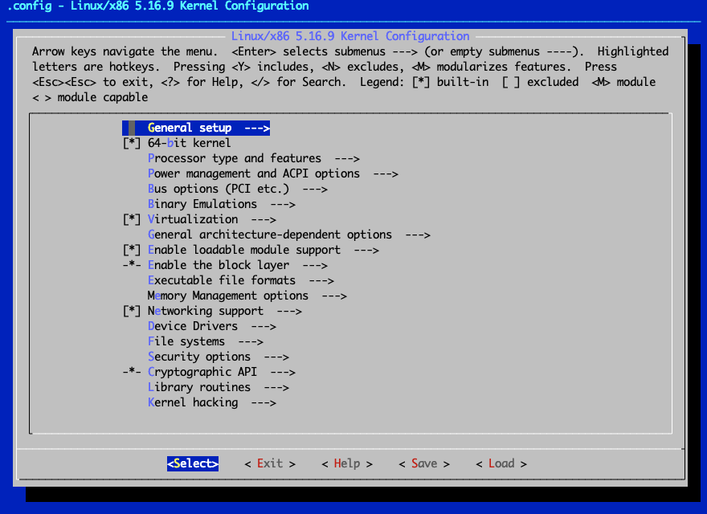
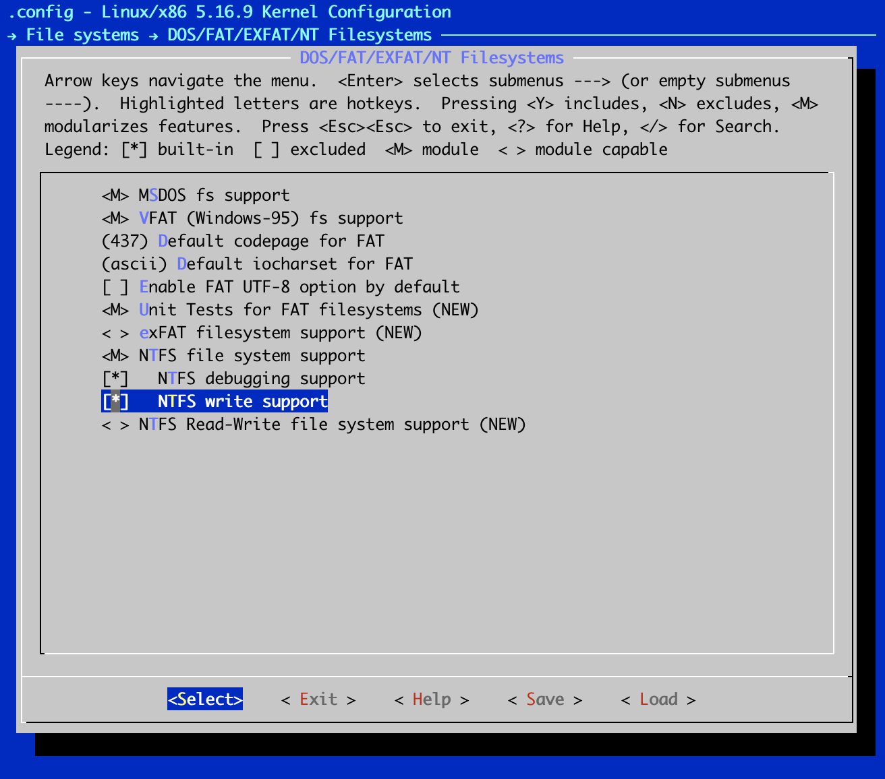

Overview¶
In this guide, we’ll walk through the process of acquiring a kernel source tree, configuring it, compiling it, and, finally, installing and booting the kernel.
Kernel rebuilds are not recommended nor supported for Rocky Linux. Before attempting to build a custom kernel, please consider the following:
- Is the functionality you need available by installing a kernel module from elrepo?
- Is the functionality you need available as a separate module from the kernel itself?
- Rocky Linux and most other EL derivatives were designed to function as a complete environment. Replacing critical components can affect how the system acts.
- Most users no longer need to build their own kernel. You may simply need a kernel module/driver or perhaps build your own kernel module (kmod/dkms)
As a final warning: If you break the kernel, you are responsible for fixing resulting issues on your system.
The Kernel¶
Most often, when people say Linux, they are usually referring to a "Linux distribution" —for example, Rocky Linux and Debian are types of Linux distribution. A distribution comprises everything necessary to get Linux to exist as a functional operating system. Distributions make use of code from various open-source projects that are independent of Linux.
Linux is The kernel. The kernel literally sits right at the heart of the [operating system] matter.
The only thing more fundamental than the kernel is the system hardware itself. Although the kernel is a small part of a complete Linux distribution, it is by far the most critical element. If the kernel fails or crashes, the rest of the system goes with it.
The Kernel Source Code¶
The Rocky Linux distribution has the source code for the specific kernel version it supports available in one form or another. These could be in the form of a compiled binary (.src.rpm), a source RPM (.srpm), or the like.
If you need to download a different (possibly newer) version than the one your specific Rocky Linux distro provides, the first place to look for the source code is at the official kernel web site:
This site maintains a listing of web sites mirroring the kernel source, as well as tons of other open-source software, distributions and general-purpose utilities.
The list of mirrors is maintained at:
Tip
The majority of the downloading, configuring and compiling of the Linux kernel done in the following sections can/should be done as an unprivileged user. However, the final steps that require actual installation or altering of system files and binaries need to be done with elevated privileges.
We are able to do most of the work as an unprivileged user because we will be using a special kernel build option, which allows us to specify a custom working or output directory. Specifically, we’ll use the O=~/build/kernel option for all applicable invocations of make.
Where ~/build/kernel is equivalent to /home/$USER/build/kernel or $HOME/build/kernel
Kernel versions and naming conventions¶
The web site listing of kernels available will contain folders for v1.0, v2.5, v2.6, v3.0, v3.x, v4.x, v5.x, v6.x and so forth. Before you follow your natural inclination to get the latest version, make sure you understand how the Linux kernel versioning system works.
The current convention is to name and number major new kernel releases as “Linux 5.x” (also called the vanilla or mainline kernels). Thus, the first of this series will be Linux version 5.0 (same as 5.0.0), the next will be Linux version 5.1 (same as 5.1.0), followed by Linux version 5.2, and so on.
Any minor changes or updates within each major release version will be reflected by increments to the third digit. These are commonly referred to as stable point releases. Thus, the next stable point release for the 5.0.0 series kernel will be Linux version 5.0.1, followed by version 5.0.2, and so forth. Another way of stating this is to say, for example, that Linux version 5.0.4 is the fourth stable release based on the Linux 5.0.0 series.
Installing prerequisite tools and libraries¶
A common source of failure encountered during the kernel build process may be caused by not having all the requisite software available for compiling and building the mainline Linux Kernel. The missing tools and libraries can be installed using the DNF package manager on a Rocky Linux distro. We’ll take care of this in this section.
-
On a Rocky Linux distro, you can quickly get most of the necessary development tools installed by running this command:
If you get 'Module or Group 'C Development Tools and Libraries' is not available.' error the below command is equivalent to above:
-
Some other libraries, header files, and applications can also be obtained by installing the following packages. Type:
-
Next, we need other utilities only available in some supported 3rd party repositories. One of such repositories is the Powertools repo. Let’s enable that repo on our Rocky system. Type:
-
Finally, let’s install one of the needed packages from the Powertool repo. Type:
That’s it for the prerequisite packages needed for actual Kernel building!
Downloading and unpacking the Linux Kernel¶
The version of the kernel that we are going to build in the following section is version 6.5.7, which is available at:
www.kernel.org/pub/linux/kernel/v6.x/linux-6.5.7.tar.xz
Let’s begin the process.
-
First, download the kernel source into your current working directory using the following curl command. Type:
-
The kernel source that you will download from the Internet is a file that has been compressed and tarred. Therefore, you need to decompress and untar the source file to use the source.
Make sure you are in the directory that download the Kernel tarball into. Use the tar command to unpack and decompress the file, by running:
Building the Kernel¶
In this section, we’re going to review the process of configuring and building a kernel. This is in contrast to macOS or Windows-based operating systems, which come preconfigured and therefore contain support for many features you may or may not want.
The Linux design philosophy allows the individual to decide on the important parts of the kernel. This individualized design has the important benefit of letting you thin down the feature list so that Linux can run as efficiently as possible.
This is also one of the reasons why it is possible to customize Linux to run in various hardware setups, from low-end systems, to embedded systems, to high-end systems.
Two main steps are required in building a kernel:
- configuring
- compiling
The first step in building the kernel is configuring its features. Usually, your desired feature list will be based on whatever hardware you need to support. This, of course, means that you’ll need a list of that hardware.
On a system that is already running Linux, you can run commands like – lspci, lshw and so on to help show detailed information about the exact hardware setup on your system. On RPM-based distros these utilities are provided by the pciutils.rpm and lshw.rpm packages.
Having a better understanding of what constitutes your underlying hardware can help you better determine what you need in your custom kernel. You’re ready to start configuring the kernel.
Sanitizing the build environment¶
We can begin the actual configuration with a rough idea of the types of hardware and features that our new kernel needs to support. But first, some background information.
The Linux kernel source tree contains several files named Makefile (a makefile is simply a text file with directives and it also describes the relationships among the files in a program).
These makefiles help to glue together the thousands of other files that make up the kernel source. What is more important to us here is that the makefiles also contain targets. The targets are the commands, or directives, that are executed by the make program.
warning: Avoid Needless Kernel Upgrades
Bear in mind that if you have a working system that is stable and well behaved, there is little reason to upgrade the kernel unless one of these conditions holds for you:
- A security or bug fix affects your system and must be applied
- You need a specific new feature in a stable release
In the case of a security fix, decide whether the risk really affects you—for example, if the security issue is found in a device driver that you don’t use, then there may be no reason to upgrade. In the case of a bug fix release, read carefully through the release notes and decide if the bugs really affect you—if you have a stable system, upgrading the kernel with patches you never use may be pointless.
On production systems, the kernel shouldn’t simply be upgraded just to have “the latest kernel”; you should have a truly compelling reason to upgrade.
The Makefile in the root of the kernel source tree contains specific targets that can be used in prepping the kernel build environment, configuring the kernel, compiling the kernel, installing the kernel, and so on. Some of the targets are discussed in more detail here:
- make mrproper This target cleans up the build environment of any stale files and dependencies that might have been left over from a previous kernel build. All previous kernel configurations will be cleaned (deleted) from the build environment.
- make clean This target does not do as thorough a job as the mrproper target. It deletes only most generated files. It does not delete the kernel configuration file (.config).
- make menuconfig This target invokes a text-based editor interface with menus, option lists, and text-based dialog boxes for configuring the kernel.
- make xconfig This is a GUI based kernel configuration tool/target that relies on the Qt graphical development libraries. These libraries are used by KDE/Plasma-based applications.
- make gconfig This is also a GUI based kernel configuration tool/target, but it relies on the GTK+ toolkit. This GTK toolkit is heavily used in the GNOME desktop world.
- make olddefconfig This target uses the existing .config file in the current working directory, updates the dependencies, and automatically sets new symbols to their default values.
- make help This target will show you all the other possible make targets and also serves as a quick online help system.
We will use only one of the targets to configure the kernel in this section. In particular, we will use the make menuconfig command. The menuconfig kernel config editor is a simple and popular text-based configuration utility that consists of menus, radio button lists, and dialogs.
It has a simple and clean interface that can be easily navigated with your keyboard and is almost intuitive to use.
We need to change (cd) into the kernel source directory, after which we can begin the kernel configuration. But before beginning the actual kernel configuration, you should clean (prepare) the kernel build environment by using the make mrproper command:
Kernel Configuration¶
Next, we will step through the process of configuring a Linux 5.* series kernel. To explore some of the innards of this process, we will enable the support of a specific feature that we’ll pretend is a MUST have feature on the system. Once you understand how this works, you can apply the same procedure to add support for any new kernel feature you want. Specifically, we’ll enable support for the NTFS file system into our custom kernel.
Most modern Linux distros ship with a kernel configuration file for the running kernel available on the local file system as a compressed or regular file. On our sample Rocky system, this file resides in the /boot directory and is usually named something like config-*.
The configuration file contains a list of the options and features that were enabled for the particular kernel it represents. A config file similar to this one is what we aim to create through the process of configuring the kernel. The only difference between the file we’ll create and the ready-made one is that we will add further minor customization to ours.
Tip
Using a known, preexisting config file as a framework for creating our own custom file helps ensure that we don’t waste too much time duplicating the efforts that other people have already put into finding what works and what doesn’t work!
The following steps cover how to configure the kernel. We will be using a text-based kernel configuration utility, which will allow you to follow along in your terminal regardless of whether you are using a GUI desktop environment or not.
-
To begin, we’ll copy over and rename the preexisting config file from the /boot directory into our kernel build environment:
We useuname -rhere to help us obtain the configuration file for the running kernel. The uname -r command prints the running kernel’s release. Using it helps ensure that we are getting the exact version we want, just in case other versions are present.Note
The Linux kernel configuration editor starts explicitly looking for and generates a file named .config (pronounced “dot config”) at the root of the kernel source tree. This file is hidden.
-
Launch the graphical kernel configuration utility:
A screen similar to this will appear:

The kernel configuration screen that appears is divided into roughly three areas.
The top part shows various helpful information, keyboard shortcuts, and legends that can help you navigate the application.
The main body of the screen shows an expandable tree-structured list of the overall configurable kernel options. You can further drill down into items with arrows in the parent to view and/or configure sub-menu (or child) items. And finally, the bottom of the screen displays the actual actions/options that the user can choose.
-
Next, we’ll add support for NTFS into our custom kernel for demonstration purposes.
While at the main configuration screen, use your arrow keys to navigate to and highlight the File systems item. With File systems selected, press enter to view the sub-menu or child items for File systems.
In the File Systems section, use your arrow keys to navigate to DOS/FAT/NT Filesystems. Press enter to see the child items for DOS/FAT/NT Filesystems.
-
In the DOS/FAT/NT Filesystems section, navigate to NTFS file system support.
Type M (uppercase) to enable modules to support for the NTFS file system.
Use the arrow keys to navigate down to NTFS debugging support (NEW) and then press y to include it.
Use the arrow keys to navigate down to NTFS write support and then press y to include it. When you are done, the letter M or an asterisk symbol (*) should appear beside each option, like the ones shown here:

Tip
For each of the configurable options, in the kernel configuration utility, empty angle parentheses, <>, indicates that the feature in question is disabled. The letter M in angle parentheses,
, indicates that the feature is to be compiled as a module. And the asterisk symbol in angle parentheses, <*>, indicates that support for the feature will be directly built into the kernel. You can usually toggle through all the possible options using the spacebar on your keyboard.
-
Navigate back to the parent File Systems screen by pressing the esc key twice on your keyboard in the DOS/FAT/NT Filesystems screen. Return to the main kernel configuration screen by pressing esc twice again on your keyboard.
-
Finally, save your changes to the .config file in the root of your kernel source tree and exit the kernel configuration application after saving the file by pressing esc twice again on your keyboard.
-
A dialog box will appear prompting you to save your new configuration. Make sure that Yes is selected and then press enter.
-
After the kernel configuration utility exits, you will be thrown back to your shell—inside the kernel source tree. You are almost ready to build your kernel!
-
We need to complete a few more customizations on our Rocky distro. Type:
Tip
To view the results of some of the changes you made using the menuconfig tool, use the grep utility to view the .config file that you saved directly. For example, to view the effect of the NTFS file system support that we enabled previously, type the following:
A Quick Note on Kernel Modules
Loadable module support is a Linux kernel feature that allows kernel modules' dynamic loading (or removal).
Kernel modules are pieces of compiled code that can be dynamically inserted into the running kernel, rather than being permanently built into the kernel. Features not often used can thus be enabled, but they won’t occupy any room in memory when they aren’t being used.
Thankfully, the Linux kernel can automatically determine what to load and when. Naturally, not every feature is eligible to be compiled as a module. The kernel must know a few things before it can load and unload modules, such as how to access the hard disk and parse through the file system where the loadable modules are stored. Some kernel modules are also commonly referred to as drivers.
Compiling the Kernel¶
In the preceding section, we walked through the process of creating a configuration file for the custom kernel that we want to build. In this section, we will perform the actual build of the kernel. But before doing this, we will add one simpler customization to the entire process.
The final customization will be to add an extra piece of information used in the final name of our kernel. This will help us be able to differentiate this kernel from any other kernel with the same version number. We will add the tag “custom” to the kernel version information. This can be done by editing the main Makefile and appending the tag that we want to the EXTRAVERSION variable.
The compilation stage of the kernel-building process is by far the easiest, but it also takes the most time. All that is needed at this point is simply to execute the make command, which will then automatically generate and take care of any dependency issues, compile the kernel itself, and compile any features (or drivers) that were enabled as loadable modules.
Because of the amount of code that needs to be compiled, be prepared to wait a few minutes, at the very least, depending on your system's processing power. Let’s dig into the specific steps required to compile your new kernel.
-
First, we’ll add an extra piece to the identification string for the kernel we are about to build. While still in the root of the kernel source tree, we’ll use the sed utility edit the Makefile in place. The variable we want to change is close to the top of the file. We want to change the line in the file that looks like this:
To this:
Use the following
sedcommand to make the change. Type:Of course, you can also use any text editor that you are comfortable with to make the change. Just remember to save your changes to the file!
-
Pass the kernelversion target to the make command to view the full version of the kernel that you just customized:
Tip
You can take advantage of all that extra processing power (CPUs, cores and so on) on most modern systems and greatly speed up CPU-intensive operations like compiling the kernel. To do this, you can pass a parameter to the make command that specifies the number of jobs to run simultaneously. The specified number of jobs are then distributed and executed simultaneously on each CPU core. The syntax for the command is:
``` > make -j N ``` where N is the number of jobs to run simultaneously. For example, if you have a octa (8) core–capable CPU, you can type: ``` > make -j 8 ``` -
The only command that is needed here to compile the kernel is the make command:
> make O=~/build/kernel make[1]: Entering directory '/home/super/build/kernel' SYNC include/config/auto.conf.cmd GEN Makefile HOSTCC scripts/kconfig/conf.o HOSTLD scripts/kconfig/conf GEN Makefile ...<OUTPUT TRUNCATED>… LD [M] sound/usb/usx2y/snd-usb-usx2y.ko LD [M] sound/x86/snd-hdmi-lpe-audio.ko LD [M] sound/xen/snd_xen_front.ko LD [M] virt/lib/irqbypass.ko make[1]: Leaving directory '/home/super/build/kernel' -
The end product of this command (that is, the kernel) is sitting pretty and waiting in the path:
-
We need to install the modules because we compiled portions of the kernel as modules (for example, the NTFS module). Type the following:
On our Rocky system, this command will install all the compiled kernel modules into the /lib/modules/
directory. In this example, this path will translate to /lib/modules/6.5.7-custom/. This is the path from which the kernel will load all loadable modules, as needed. Tip
The footprint (size) of the kernel modules installed via “make modules_install” can end up getting pretty large because the modules include debugging symbols. As a result, you could easily end up with a
/lib/modules/6.5.7-custom/directory that is close to 5GB in size!For this guide we avoid this large size by including the INSTALL_MOD_STRIP=1 option in our make modules_install invocation. You can reduce the total size by orders of magnitude (For example - less than 200 MB!!) by stripping away these debugging symbols.
This can be done by including the
INSTALL_MOD_STRIP=1option to themake modules_installcommand.
Installing the Kernel¶
Assuming you have a PC and are working out of the ~/build/kernel/ directory, the compiled kernel that was created in the previous exercise will be located in this path - <kernel-build-dir>/arch/x86/boot/bzImage or, to be precise, in our example ~/build/kernel/arch/x86/boot/bzImage.
The corresponding map file for this will be located at ~/build/kernel/System.map. You’ll need both files for the install phase.
The System.map file is useful when the kernel is misbehaving and generating “Oops” messages. An “Oops” is generated on some kernel errors because of kernel bugs or faulty hardware.
This error is akin to the Blue Screen of Death (BSOD) in Microsoft Windows. These messages include a lot of detail about the system's current state, including several hexadecimal numbers.
System.map gives Linux a chance to turn those hexadecimal numbers into readable names, making debugging easier. Although this is mostly for the benefit of developers, it can be handy when you’re reporting a problem.
Let’s go through the steps required to install the new kernel image.
-
While in the root of your kernel build directory, copy and rename the bzImage file into the /boot directory:
Here, kernel-version is the version number of the kernel. For the sample kernel we are using in this guide, the filename would be vmlinuz-6.5.7-custom. So here’s the exact command for this example:
Note
The decision to name the kernel image vmlinuz-6.5.7-custom is somewhat arbitrary. It’s convenient, because kernel images are commonly referred to as vmlinuz, and the suffix of the version number is useful when you have multiple kernels available or kernels that provide specific functionality (For example vmlinuz-6.50.0-ws).
-
Now that the kernel image is in place, copy over and rename the corresponding System.map file into the /boot directory using the same naming convention:
-
With the kernel in place, the System.map file in place, and the modules in place, we are now ready for the final step. The syntax for the command needed is:
Here,
is the version number (and name) of the kernel. And is the path to the newly compiled kernel image. For our example, type:
The kernel-install command used here is a nifty little shell script. It might not be available in every Linux distribution, but it is available in newer Fedora, RHEL, CentOS distros. This tool automates a lot of the final manual things we’d ordinarily have to do to set up the system to boot the new kernel we just built.
In particular, the tool does the following:
- It creates the appropriate initial RAM file system image (the initramfs image—that is, the /boot/initramfs-
.img file). To do this manually on systems where kernel-install is not available, use the mkinitramfs command. - It runs the depmod command (which creates a list of module dependencies).
- It updates the boot loader configuration.
For systems running the newer versions of GRUB2, the file will be /boot/grub2/grub.cfg. For EFI based systems /boot/efi/
And for systems running the legacy versions of GRUB, this will be the /boot/grub/grub.conf or /boot/grub/menu.lst file. And for very new distros that have implemented the new Boot Loader Specification (BLS) a new boot loader entry will be added to the /boot/loader/entries/ directory, or any directory pointed to by the variable named "blsdir".
On our demo EFI based Rocky server running GRUB 2 using BLS, a new boot entry is created in the boot loader file located here: /boot/loader/entries/6fa25ca775f64accb0d3e53f0e4e6e92-6.5.7-custom.conf
> sudo cat /boot/loader/entries/6fa25ca775f64accb0d3e53f0e4e6e92-6.5.7-custom.conf
title Rocky Linux (6.5.7-custom) 8.5 (Green Obsidian)
version 6.5.7-custom
linux /vmlinuz-6.5.7-custom
initrd /initramfs-6.5.7-custom.img $tuned_initrd
options $kernelopts $tuned_params
id rocky-20220212013135-6.5.7-custom
grub_users $grub_users
grub_arg --unrestricted
grub_class kernel
Note
Most distros, have several grub2-* utilities readily available that can be used for performing various GRUB2 and boot loader housekeeping tasks. For example, you can use the grub2-set-default command to change or set the default kernel to be booted at system startup.
Booting the custom Kernel¶
The next stage is to test the kernel to ensure the system can boot with it.
-
Assuming you did everything the exact way that the doctor prescribed and that everything worked out exactly as the doctor said it would, you can safely reboot the system and select the new kernel from the boot loader menu during system bootup:
-
After the system boots up, you can use the uname command to find out the name of the current kernel:
-
You will recall that one of the features that we added to our new kernel is the ability to support the NTFS file system. Make sure that the new kernel does indeed have support for NTFS by displaying information about the NTFS module:
And that’s it!